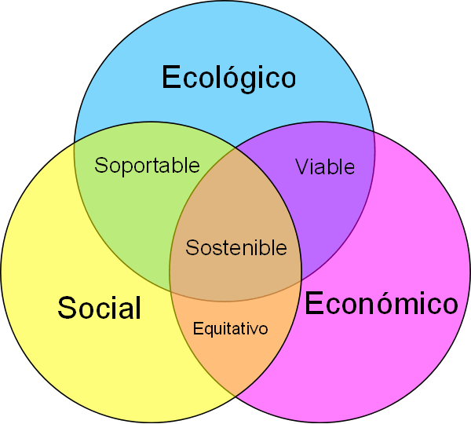

| Características de un desarrollo sostenible | |
|
 Talar árboles asegurando la repoblación es una actividad sostenible. Por contra, consumir petróleo no es sostenible ya que hoy en día no se conoce ningún sistema para crear petróleo. |
Un desarrollo es sostenible cuando es capaz de satisfacer las necesidades actuales sin comprometer los recursos de las futuras generaciones. Hoy en día muchas de las actividades humanas no son sostenibles a medio y largo plazo tal y como hoy están planteadas. Las características que debe tener un desarrollo para considerarlo sostenible son:
|